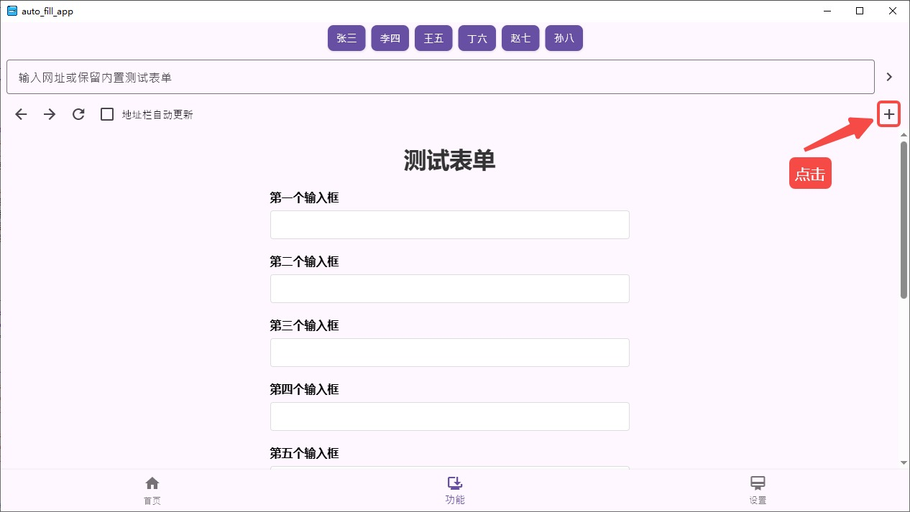
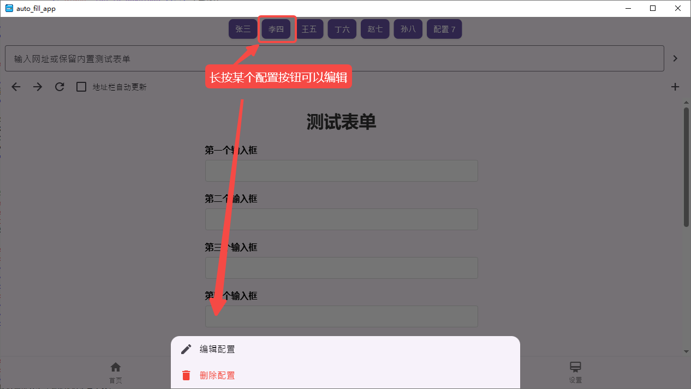

网页填写助手使用指南
工作原理
软件将按照您预先配置的文本顺序，自动识别目标网页中的对应输入框，并依次填入配置好的内容，无需手动重复输入，提高预约操作效率。
一、电脑端演示
手机端流程与电脑端一样，这里不再赘述。
https://www.bilibili.com/video/BV1oiWmzqEKw/
二、配置步骤
1. 添加配置
点击页面中的「+」按钮添加新配置，根据下载的教程资料包中对应银行的参考图片，填写相关配置信息（如输入框对应字段、填写内容等），确保配置与目标网页的输入项一致。

2. 编辑/删除配置
手机端长按对应配置的按钮，或电脑端鼠标左键长按该按钮，（长按就是按住按钮不动，不要松开）将弹出操作菜单，可选择「编辑」修改配置信息，或「删除」不需要的配置项。

三、使用步骤
1. 在地址栏输入或粘贴网页地址。
2. 点击地址栏右边的「>」按钮，快速进入目标网页。
3. 网页加载完毕后，点击对应的配置按钮，自动填写输入框内容。
四、问题反馈和服务
联系邮箱：service@hzcrf.cn
联系微信：xysxb1998